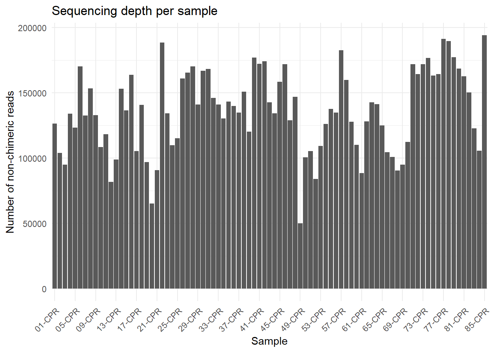
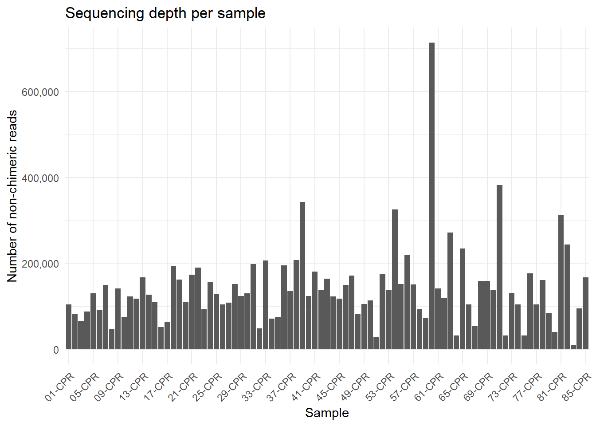
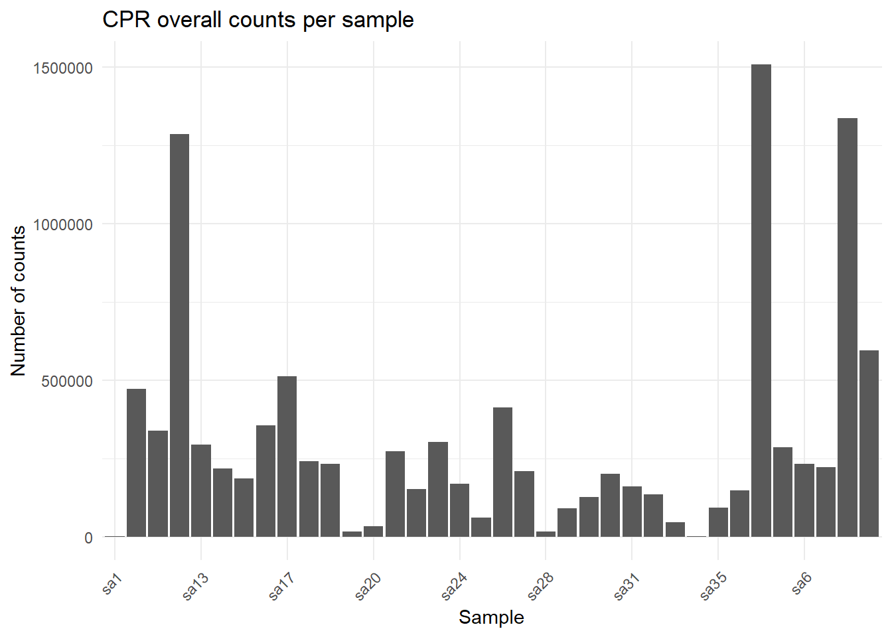
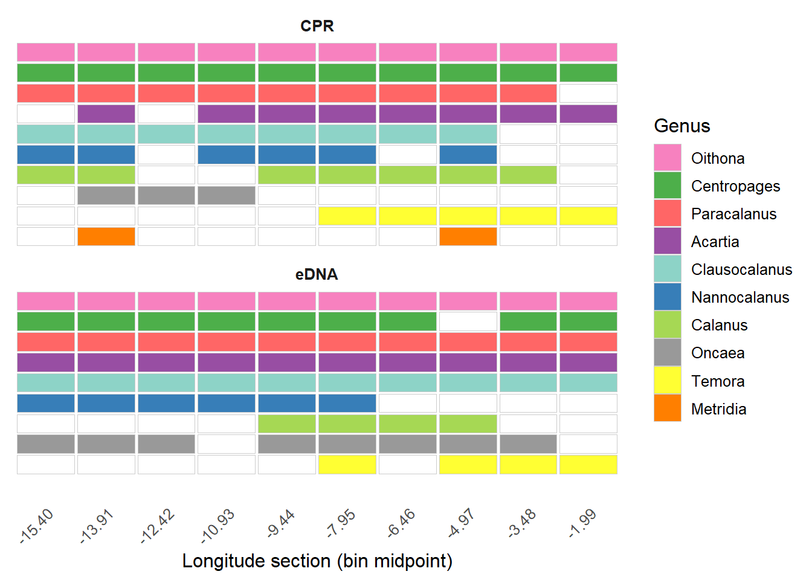
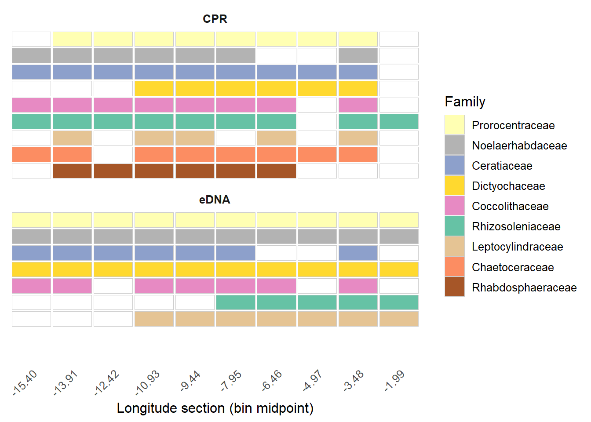
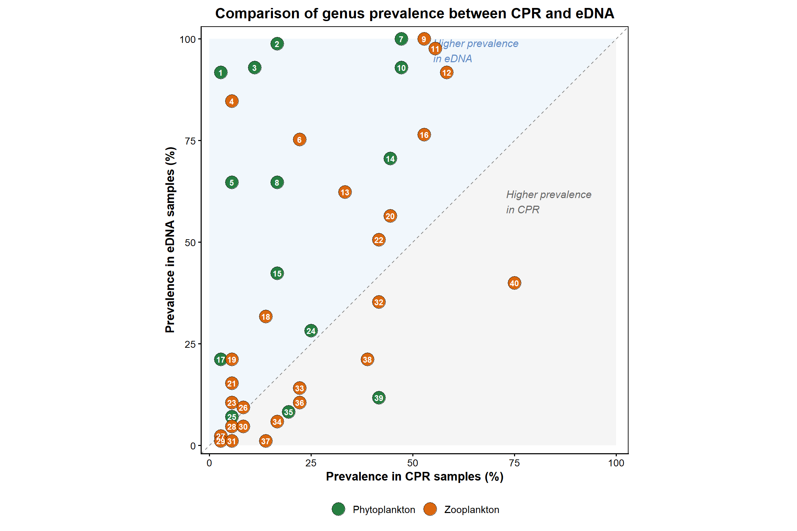
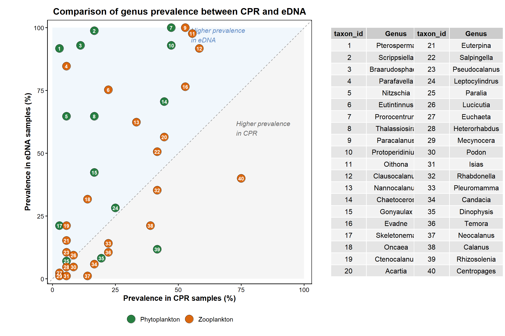
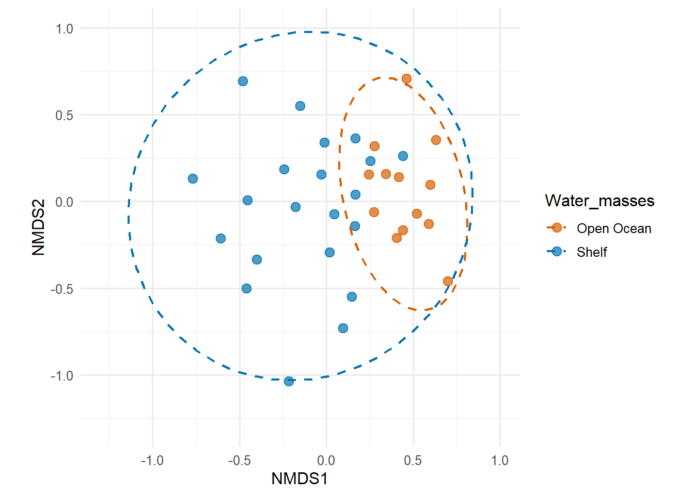
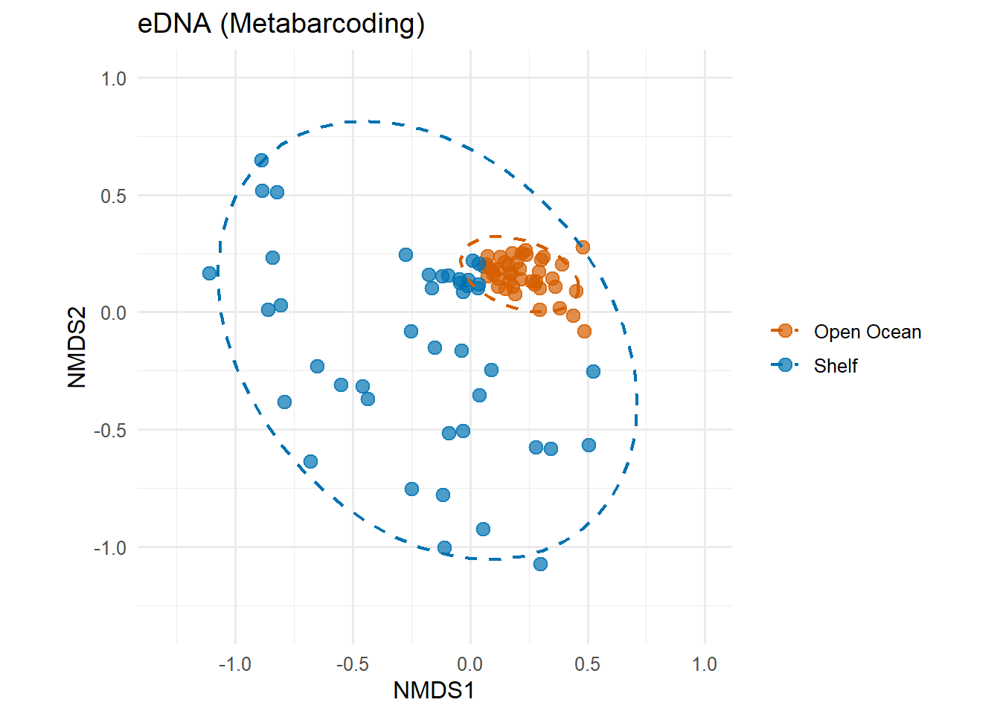
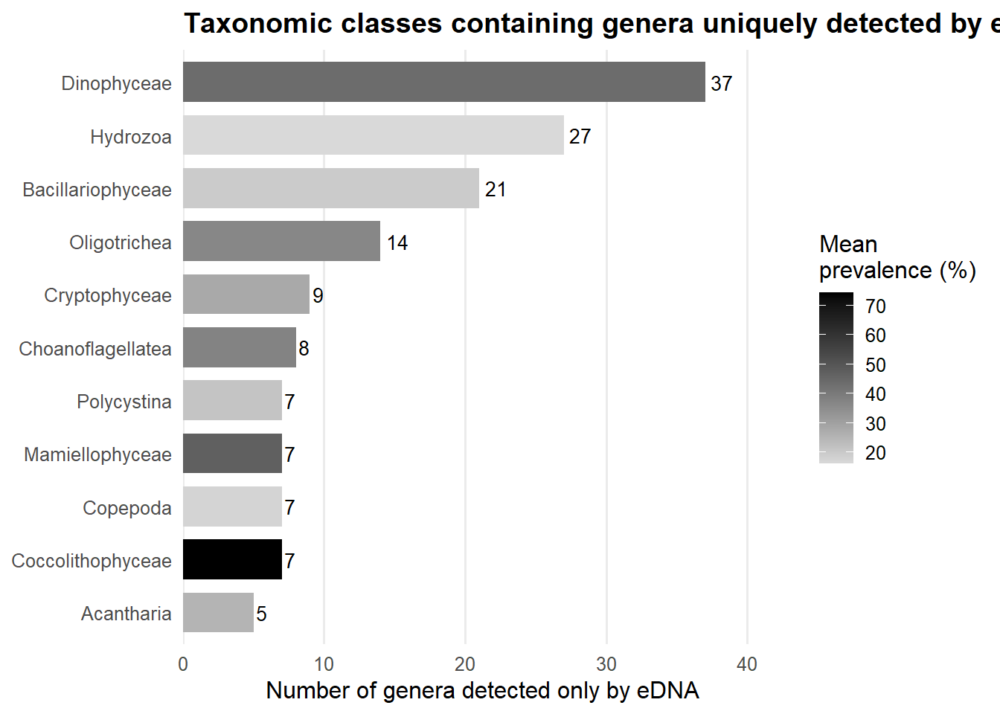

| sample | input | filtered | nonchim | reads_retained (%) | input | filtered | nonchim | reads_retained (%) |
|---|---|---|---|---|---|---|---|---|
| 01-CPR_1_ID_1_ | 148213 | 128862 | 126330 | 85.2 | 144059 | 139400 | 104643 | 72.6 |
| 02-CPR_1_ID_2_ | 121841 | 105245 | 103807 | 85.2 | 91034 | 86400 | 82657 | 90.8 |
| 03-CPR_1_ID_3_ | 117632 | 96408 | 94945 | 80.7 | 77206 | 75069 | 65275 | 84.5 |
| 04-CPR_1_ID_4_ | 170195 | 135708 | 133962 | 78.7 | 99005 | 95927 | 88038 | 88.9 |
| 05-CPR_1_ID_5_ | 139036 | 124966 | 123177 | 88.6 | 143700 | 136891 | 130456 | 90.8 |
| 06-CPR_1_ID_7_ | 189844 | 172629 | 170302 | 89.7 | 100258 | 95319 | 91819 | 91.6 |
| 07-CPR_1_ID_8_ | 156940 | 134665 | 132550 | 84.5 | 163332 | 156331 | 150014 | 91.8 |
| 08-CPR_1_ID_9_ | 169359 | 155134 | 153346 | 90.5 | 56907 | 47951 | 46489 | 81.7 |
| 09-CPR_1_ID_10_ | 149202 | 134894 | 132964 | 89.1 | 164215 | 149580 | 141147 | 86.0 |
| 10-CPR_1_ID_12_ | 133358 | 109353 | 108318 | 81.2 | 82507 | 79597 | 75675 | 91.7 |
| 11-CPR_1_ID_13_ | 159171 | 119466 | 118219 | 74.3 | 133207 | 128803 | 122620 | 92.1 |
| 12-CPR_1_ID_14_ | 154920 | 82372 | 81798 | 52.8 | 127207 | 123701 | 117516 | 92.4 |
| 13-CPR_1_ID_15_ | 165533 | 100962 | 98756 | 59.7 | 181637 | 174765 | 167385 | 92.2 |
| 14-CPR_1_ID_16_ | 174055 | 154970 | 153105 | 88.0 | 137952 | 131771 | 126534 | 91.7 |
| 15-CPR_1_ID_18_ | 187464 | 141613 | 136443 | 72.8 | 119723 | 113684 | 109776 | 91.7 |
| 16-CPR_1_ID_19_ | 199073 | 165283 | 163680 | 82.2 | 57654 | 55146 | 51706 | 89.7 |
| 17-CPR_1_ID_20_ | 121858 | 107172 | 105402 | 86.5 | 70524 | 67331 | 64356 | 91.3 |
| 18-CPR_1_ID_21_ | 150714 | 142004 | 140604 | 93.3 | 207441 | 199025 | 193426 | 93.2 |
| 19-CPR_1_ID_22_ | 121155 | 98484 | 96981 | 80.0 | 174619 | 168282 | 162395 | 93.0 |
| 20-CPR_1_ID_23_ | 80435 | 66396 | 65169 | 81.0 | 119162 | 113276 | 109138 | 91.6 |
| 21-CPR_1_ID_24_ | 104984 | 92580 | 90811 | 86.5 | 185903 | 179594 | 173934 | 93.6 |
| 22-CPR_1_ID_26_ | 236346 | 191192 | 188534 | 79.8 | 202369 | 196976 | 190007 | 93.9 |
| 23-CPR_1_ID_27_ | 156485 | 137223 | 134112 | 85.7 | 101725 | 97126 | 92636 | 91.1 |
| 24-CPR_1_ID_28_ | 127353 | 111643 | 109821 | 86.2 | 170221 | 162524 | 155675 | 91.5 |
| 25-CPR_1_ID_29_ | 132416 | 116805 | 115151 | 87.0 | 139384 | 134544 | 127957 | 91.8 |
| 26-CPR_1_ID_30_ | 172100 | 162217 | 160855 | 93.5 | 112727 | 107640 | 104009 | 92.3 |
| 27-CPR_1_ID_31_ | 178342 | 167885 | 165400 | 92.7 | 119777 | 114101 | 108237 | 90.4 |
| 28-CPR_1_ID_32_ | 183002 | 172658 | 170208 | 93.0 | 163244 | 156129 | 151718 | 92.9 |
| 29-CPR_1_ID_34_ | 158952 | 143494 | 141092 | 88.8 | 136586 | 128685 | 124018 | 90.8 |
| 30-CPR_2_ID_1_ | 194720 | 169302 | 166858 | 85.7 | 139205 | 135316 | 129682 | 93.2 |
| 31-CPR_2_ID_3_ | 194060 | 171082 | 168250 | 86.7 | 212589 | 206838 | 198641 | 93.4 |
| 32-CPR_2_ID_4_ | 179081 | 148520 | 145983 | 81.5 | 53088 | 51392 | 48520 | 91.4 |
| 33-CPR_2_ID_5_ | 166777 | 142691 | 140932 | 84.5 | 237970 | 219557 | 206262 | 86.7 |
| 34-CPR_2_ID_6_ | 149638 | 132537 | 130439 | 87.2 | 77732 | 75401 | 71710 | 92.3 |
| 35-CPR_2_ID_7_ | 174663 | 145714 | 143138 | 82.0 | 81727 | 79459 | 75761 | 92.7 |
| 36-CPR_2_ID_9_ | 171703 | 141792 | 139921 | 81.5 | 207408 | 202506 | 195469 | 94.2 |
| 37-CPR_2_ID_10_ | 153543 | 137488 | 134897 | 87.9 | 144427 | 141116 | 135198 | 93.6 |
| 38-CPR_2_ID_11_ | 180363 | 152422 | 150795 | 83.6 | 221320 | 215203 | 207024 | 93.5 |
| 39-CPR_2_ID_12_ | 150636 | 122151 | 120213 | 79.8 | 365807 | 355825 | 342978 | 93.8 |
| 40-CPR_2_ID_13_ | 194784 | 180872 | 177058 | 90.9 | 135022 | 131227 | 124090 | 91.9 |
| 41-CPR_2_ID_15_ | 197928 | 174280 | 172050 | 86.9 | 193553 | 188006 | 180216 | 93.1 |
| 42-CPR_2_ID_16_ | 188135 | 175790 | 174228 | 92.6 | 147285 | 143187 | 137576 | 93.4 |
| 43-CPR_2_ID_17_ | 174942 | 145002 | 142740 | 81.6 | 174113 | 170004 | 163659 | 94.0 |
| 44-CPR_2_ID_18_ | 153984 | 135955 | 134263 | 87.2 | 131276 | 127604 | 122426 | 93.3 |
| 45-CPR_2_ID_19_ | 194789 | 161953 | 158427 | 81.3 | 128156 | 124223 | 117511 | 91.7 |
| 46-CPR_2_ID_21_ | 194608 | 174043 | 171831 | 88.3 | 160623 | 156266 | 149656 | 93.2 |
| 47-CPR_2_ID_22_ | 160941 | 131068 | 128824 | 80.0 | 183353 | 178208 | 171636 | 93.6 |
| 48-CPR_2_ID_23_ | 165931 | 148535 | 146897 | 88.5 | 89249 | 86797 | 83044 | 93.0 |
| 49-CPR_2_ID_24_ | 54433 | 50624 | 50116 | 92.1 | 116076 | 110431 | 104890 | 90.4 |
| 50-CPR_2_ID_25_ | 117781 | 101928 | 100424 | 85.3 | 125438 | 119556 | 113333 | 90.3 |
| 51-CPR_2_ID_27_ | 142756 | 107233 | 105385 | 73.8 | 30590 | 29864 | 27751 | 90.7 |
| 52-CPR_3_ID_1_ | 111133 | 85681 | 83994 | 75.6 | 188262 | 182359 | 174176 | 92.5 |
| 53-CPR_3_ID_3_ | 131736 | 110547 | 109180 | 82.9 | 149259 | 144930 | 138719 | 92.9 |
| 54-CPR_3_ID_4_ | 144501 | 127699 | 125997 | 87.2 | 348047 | 337956 | 325604 | 93.6 |
| 55-CPR_3_ID_5_ | 154373 | 138771 | 137538 | 89.1 | 162972 | 157261 | 151439 | 92.9 |
| 56-CPR_3_ID_6_ | 150617 | 135967 | 134698 | 89.4 | 235204 | 228457 | 220339 | 93.7 |
| 57-CPR_3_ID_7_ | 199644 | 184698 | 182638 | 91.5 | 165181 | 159075 | 150736 | 91.3 |
| 58-CPR_3_ID_9_ | 176030 | 161246 | 159690 | 90.7 | 101926 | 98194 | 93307 | 91.5 |
| 59-CPR_3_ID_10_ | 138047 | 128819 | 127705 | 92.5 | 78978 | 75907 | 72554 | 91.9 |
| 60-CPR_3_ID_11_ | 127549 | 111467 | 109994 | 86.2 | 764251 | 743533 | 713247 | 93.3 |
| 61-CPR_3_ID_12_ | 99488 | 89824 | 88534 | 89.0 | 152306 | 147417 | 141727 | 93.1 |
| 62-CPR_3_ID_13_ | 144619 | 129452 | 128198 | 88.6 | 127896 | 124206 | 119095 | 93.1 |
| 63-CPR_3_ID_15_ | 173235 | 144180 | 142702 | 82.4 | 292673 | 282276 | 271096 | 92.6 |
| 64-CPR_3_ID_16_ | 178289 | 143108 | 141138 | 79.2 | 34818 | 33694 | 31628 | 90.8 |
| 65-CPR_3_ID_17_ | 162707 | 126581 | 124884 | 76.8 | 250949 | 244820 | 234509 | 93.4 |
| 66-CPR_3_ID_18_ | 131876 | 106565 | 104364 | 79.1 | 110678 | 108129 | 103754 | 93.7 |
| 67-CPR_3_ID_19_ | 128988 | 102637 | 100914 | 78.2 | 58035 | 56351 | 53356 | 91.9 |
| 68-CPR_3_ID_21_ | 107663 | 92109 | 90482 | 84.0 | 172563 | 165373 | 158612 | 91.9 |
| 69-CPR_3_ID_22_ | 112212 | 96684 | 94953 | 84.6 | 173570 | 168441 | 158656 | 91.4 |
| 70-CPR_3_ID_23_ | 132352 | 113912 | 112257 | 84.8 | 148617 | 143765 | 137513 | 92.5 |
| 71-CPR_3_ID_24_ | 196535 | 174115 | 171928 | 87.5 | 405832 | 395478 | 382290 | 94.2 |
| 72-CPR_4_ID_1_ | 196923 | 166713 | 164208 | 83.4 | 35382 | 33909 | 31733 | 89.7 |
| 73-CPR_4_ID_3_ | 213738 | 175220 | 171992 | 80.5 | 156704 | 143311 | 131255 | 83.8 |
| 74-CPR_4_ID_4_ | 205473 | 178940 | 176603 | 85.9 | 112970 | 109524 | 103878 | 92.0 |
| 75-CPR_4_ID_5_ | 189932 | 165289 | 163135 | 85.9 | 35141 | 33968 | 31796 | 90.5 |
| 76-CPR_4_ID_7_ | 197530 | 166801 | 164410 | 83.2 | 194218 | 185074 | 176431 | 90.8 |
| 77-CPR_4_ID_8_ | 235558 | 194621 | 191317 | 81.2 | 113842 | 110778 | 103904 | 91.3 |
| 78-CPR_4_ID_9_ | 230985 | 193352 | 189591 | 82.1 | 176304 | 168346 | 160614 | 91.1 |
| 79-CPR_4_ID_11_ | 218815 | 181431 | 177308 | 81.0 | 98280 | 90284 | 84739 | 86.2 |
| 80-CPR_4_ID_12_ | 214875 | 172492 | 168539 | 78.4 | 43775 | 42215 | 40632 | 92.8 |
| 81-CPR_4_ID_13_ | 206448 | 170783 | 162683 | 78.8 | 343639 | 332962 | 312529 | 90.9 |
| 82-CPR_4_ID_15_ | 193011 | 156690 | 150368 | 77.9 | 262846 | 253570 | 243480 | 92.6 |
| 83-CPR_4_ID_16_ | 162913 | 125167 | 122596 | 75.3 | 11798 | 11246 | 10326 | 87.5 |
| 84-CPR_4_ID_17_ | 142434 | 107027 | 105677 | 74.2 | 102915 | 98756 | 94552 | 91.9 |
| 85-CPR_4_ID_19_ | 228236 | 196262 | 193991 | 85.0 | 185461 | 180209 | 167045 | 90.1 |
Analysis Code for the RoCSI-CPR study
🧬 Overview of Sequencing & Experimental Design
This report summarises the two metabarcoding workflows applied to the RoCSI-CPR eDNA samples:
- 18S rRNA V9 region (targeting phytoplankton)
- COI mitochondrial region (targeting zooplankton)
Both datasets were sequenced at the
Centre for Genomic Research (CGR), University of Liverpool.
📊 Sequencing Summary
| Feature | 18S rRNA V9 | COI (metazoans) |
|---|---|---|
| SSP ID | SSP202877 | SSP200993 |
| Purchase order | 203631529 | P10817-5 |
| Sequencing platform | Illumina MiSeq v2 (2×150 bp) | Illumina MiSeq v2 (2×250 bp) |
| Target region | 18S V9 (1389F–1510R) | COI Leray fragment (m1COIintF–jgHCO2198) |
| Expected amplicon size | ~121 bp | ~313 bp |
| Raw read depth (mean) | ~150k | ~200k |
| Pre-trimming QC | Cutadapt v4.5 | Cutadapt v1.2.1 + Sickle v1.200 |
| Downstream processing | Cutadapt → DADA2 → MZG 18S | Cutadapt → DADA2 → MZG COI |
🧬 Primer Sets (with CGR Overhangs)
18S V9 Primers
Forward:
5′ ACACTCTTTCCCTACACGACGCTCTTCCGATCTNNNNN
TTGTACACACCGCCC 3′
(CGR overhang + spacer in blue; 18S primer in red)Reverse:
5′ GTGACTGGAGTTCAGACGTGTGCTCTTCCGATCT
CCTTCYGCAGGTTCACCTAC 3′
COI Primers
Forward:
5′ ACACTCTTTCCCTACACGACGCTCTTCCGATCTNNNNN
GGWACWGGWTGAACWGTWTAYCCYCC 3′
(m1COIintF)Reverse:
5′ GTGACTGGAGTTCAGACGTGTGCTCTTCCGATCT
TAIACYTCIGGRTGICCRAARAAYCA 3′
(jgHCO2198)
🔧 Bioinformatic Workflow Overview
Both markers follow the same general pipeline:
- Primer removal (Cutadapt)
- Quality filtering (DADA2)
- Error learning and denoising (DADA2)
- Read merging (DADA2)
- Chimera removal (DADA2)
- Taxonomic assignment: (DADA2)
- 18S → MZG 18S “All Microbes + Protists”, Mode-A reference database
- COI → MZG COI “All Invertebrates”, Mode-A reference database
- 18S → MZG 18S “All Microbes + Protists”, Mode-A reference database
For each step, differences between the two pipelines are shown.
1️⃣ Primer Removal with Cutadapt
🔹 Summary of Cutadapt parameters used
| Parameter | 18S | COI |
|---|---|---|
Forward primer (-g) |
TTGTACACACCGCCC | GGWACWGGWTGAACWGTWTAYCCYCC |
Reverse primer (-G) |
CCTTCYGCAGGTTCACCTAC | TANACYTCNGGRTGNCCRAARAAYCA |
--match-read-wildcards |
✔️ | ✔️ |
| Minimum overlap | 10 | 20 |
Max error rate (-e) |
0.15 | 0.20 |
--discard-untrimmed |
✔️ | ✔️ |
--minimum-length |
80 bp | 200 bp |
| Pre-processing by CGR | Adapters trimmed via Cutadapt 4.5 | Adapters trimmed (Cutadapt v1.2.1) + Sickle quality filtering |
🔹 Unified Cutadapt description
Both datasets used a looping bash command of the form:
cutadapt\
-g <forward_primer> \
-G <reverse_primer> \
--match-read-wildcards \
--overlap <OV> \
-e <ERROR> \
--pair-filter=both \
--discard-untrimmed \
--cores=0 \
-o $out1 -p $out2 \
$f $rWhere
2️⃣ DADA2 Processing
🔹 Summary of Cutadapt parameters used
| Parameters | 18S | COI |
|---|---|---|
truncLen |
c(130,120) | c(210,210) |
maxEE |
c(2,3) | c(2,3) |
minLen |
80 | 200 |
minOverlap (mergePairs) |
30 | 90 |
| Ref database | MZG 18S | MZG COI |
NoteMZG Reference databases
| Marker | Database | Notes |
|---|---|---|
| 18S | MZGdada2-18s__T2000000__o00__A.fastq |
phytoplankton –> “All Microbes + Protists”, mode-A |
| COI | MZGdada2-coi__T4000000__o00__A.fastq |
zooplankton –> “All invertebrates”, mode-A |
source: https://metazoogene.org/mzgdb/atlas/html-src/data__T4000000__o00.html
🔹 Unified DADA2 description
Both datasets were processed with the standard DADA2 workflow:
# Filtering and trimming (R1/R2 after cutadapt)
filtered_out <- filterAndTrim(
fwd = forward_reads,
filt = filtered_forward_reads,
rev = reverse_reads,
filt.rev = filtered_reverse_reads,
truncLen = <MARKER_SPECIFIC>, # see table above
maxEE = c(2, 3), # expected errors (stricter for R1)
maxN = 0, # discard reads with Ns
rm.phix = TRUE, # remove PhiX reads
minLen = <MINLEN>, # marker-specific minimum length
multithread = TRUE
)
# Error learning
errF <- learnErrors(filtered_forward_reads, multithread=TRUE)
errR <- learnErrors(filtered_reverse_reads, multithread=TRUE)
# Dereplication
derepF <- derepFastq(filtered_forward_reads)
derepR <- derepFastq(filtered_reverse_reads)
# ASV inference
dadaF <- dada(derepF, err=errF, pool="pseudo")
dadaR <- dada(derepR, err=errR, pool="pseudo")
# Merging
merged <- mergePairs(dadaF, derepF, dadaR, derepR,
minOverlap = <MARKER_SPECIFIC>,
trimOverhang = TRUE)
# ASV table
seqtab <- makeSequenceTable(merged)
# Chimera removal
seqtab.nochim <- removeBimeraDenovo(seqtab, method="consensus")
# Taxonomic Assignment
taxa <- assignTaxonomy(
seqtab.nochim,
refFasta = <REF_FASTA>,
multithread = TRUE
)
NoteNote
For 18S, shorter reads (150 bp) and a very short amplicon (~121 bp) justify relatively short truncLen (130, 120) and minLen = 80. For COI, the longer amplicon fragment (~313 bp) and 2×250 bp reads allow more aggressive truncation (210, 210) with large overlap (90) and a higher minLen = 200 to remove spurious short fragments.
🔍 Read Tracking Summary
The following table summarizes read counts at each step of the DADA2 pipeline:
NoteNegative Controls
The No-Template Control (NTC) and Extraction Blank samples in the 18S dataset did not pass the initial DADA2 filtering step, resulting in zero retained reads after quality filtering.
Consequently, these controls were excluded from downstream analysis (denoising, merging, and taxonomy assignment).
Their exclusion is consistent with expectations for negative controls, indicating the absence of detectable contamination above sequencing background levels.
Note💬 Discussion — reads retained
The proportion of reads that were kept following the DADA2 pipeline is good: 84% and 91% for 18S and COI, respectively. This leaves an average of 136K and 142K reads for 18S and COI, respectively. Let’s note that for 18S, samples 12 and 13 lost more then the rest: 53% and 60%, respectively.
18S Dataset
📦 Build the phyloseq object (18S)
library(tidyverse)
library(phyloseq)
# ---- paths ----
datadir <- "data/18S"
# ---- load DADA2 outputs ----
seqtab.nochim <- readRDS(file.path(datadir, "seqtab_nochim.rds"))
taxa <- readRDS(file.path(datadir, "taxa.rds"))
# Make sure taxonomy is a proper matrix and has consistent column names
taxa <- as.matrix(taxa)
target_cols <- c(
"Kingdom","Subkingdom_1","Subkingdom_2","Phylum","Subphylum","Subphylum_1","Superclass",
"Class","Subclass","Infraclass","Superorder","Order","Suborder_1","Suborder_2","Suborder_3",
"Family","Subfamily","Genus","Subgenus","Species"
)
colnames(taxa) <- target_cols[seq_len(ncol(taxa))]
# Load metadata
metadat <- readRDS(file.path(datadir, "metadata_18S.rds"))
# Create a Phyloseq object
rownames(seqtab.nochim) <- sub("_$", "", rownames(seqtab.nochim))
ps_18s <- phyloseq(otu_table(seqtab.nochim, taxa_are_rows = F),
sample_data(metadat),
tax_table(taxa))
saveRDS(ps_18s, "data/ps_18s.rds")
cat("🔹 A summary of the phyloseq object \n")🔹 A summary of the phyloseq object ps_18sphyloseq-class experiment-level object
otu_table() OTU Table: [ 5154 taxa and 85 samples ]
sample_data() Sample Data: [ 85 samples by 8 sample variables ]
tax_table() Taxonomy Table: [ 5154 taxa by 20 taxonomic ranks ]# storing the ASV sequences and assigning them with a name and then renaming the taxa object
dna <- Biostrings::DNAStringSet(taxa_names(ps_18s))
names(dna) <- taxa_names(ps_18s)
ps_18s <- merge_phyloseq(ps_18s, dna)
taxa_names(ps_18s) <- paste0("ASV", seq(ntaxa(ps_18s)))🔹 These are the metadata variables:[1] "cpr" "ID" "Sample" "Number" "Inst" "lat" "lon"
[8] "Position"Read depth per sample
read_depth <- data.frame(
Sample = sample_names(ps_18s),
Reads = sample_sums(ps_18s),
check.names = FALSE
)
ggplot(read_depth, aes(x = Sample, y = Reads)) +
geom_col() +
theme_minimal() +
theme(axis.text.x = element_text(angle = 45, hjust = 1)) + # Rotate x-axis labels for better readability
scale_x_discrete(
labels = function(x) substr(x, 1, 6), # Show only the first 5 characters of each label
breaks = function(x) x[seq(1, length(x), by = 4)] # Show every 4th label
) +
labs(
title = "Sequencing depth per sample",
x = "Sample",
y = "Number of non-chimeric reads"
)
COI Dataset
📦 Build the phyloseq object (COI)
library(tidyverse)
library(phyloseq)
# ---- paths ----
datadir <- "data/COI"
# ---- load DADA2 outputs ----
seqtab.nochim <- readRDS(file.path(datadir, "seqtab_nochim.rds"))
taxa <- readRDS(file.path(datadir, "taxa.rds"))
# Make sure taxonomy is a proper matrix and has consistent column names
taxa <- as.matrix(taxa)
target_cols <- c(
"Kingdom","Subkingdom_1","Subkingdom_2","Phylum","Subphylum","Subphylum_1","Superclass",
"Class","Subclass","Infraclass","Superorder","Order","Suborder_1","Suborder_2","Suborder_3",
"Family","Subfamily","Genus","Subgenus","Species"
)
colnames(taxa) <- target_cols[seq_len(ncol(taxa))]
# Load metadata
metadat <- readRDS(file.path(datadir, "metadata_COI.rds"))
# Create a Phyloseq object
rownames(seqtab.nochim) <- sub("_$", "", rownames(seqtab.nochim))
ps_coi <- phyloseq(otu_table(seqtab.nochim, taxa_are_rows = F),
sample_data(metadat),
tax_table(taxa))
saveRDS(ps_coi, "data/ps_coi.rds")
cat("🔹 ** A summary of the phyloseq object**\n")🔹 ** A summary of the phyloseq object**ps_coiphyloseq-class experiment-level object
otu_table() OTU Table: [ 18037 taxa and 85 samples ]
sample_data() Sample Data: [ 85 samples by 8 sample variables ]
tax_table() Taxonomy Table: [ 18037 taxa by 20 taxonomic ranks ]# storing the ASV sequences and assigning them with a name and then renaming the taxa object
dna <- Biostrings::DNAStringSet(taxa_names(ps_coi))
names(dna) <- taxa_names(ps_coi)
ps_coi <- merge_phyloseq(ps_coi, dna)
taxa_names(ps_coi) <- paste0("ASV", seq(ntaxa(ps_coi)))🔹 **These are the metadata variables:**[1] "cpr" "ID" "Sample" "Number" "Inst" "lat" "lon"
[8] "Position"Read depth per sample

CPR Dataset
📦 Build the phyloseq object (CPR data)
library(tidyverse)
library(phyloseq)
# ---- load data ----
counts <- read_csv("data/count_table_CPR.csv")
taxo <- read_csv("data/taxonomy_table_CPR.csv")
meta <- read_csv("data/metadata_CPR.csv")
taxtab <- as.matrix(taxo)
row.names(taxtab) <- taxo[[8]]
# Create a Phyloseq object
ps_cpr <- phyloseq(otu_table(counts, taxa_are_rows = F),
sample_data(meta),
tax_table(taxtab))
saveRDS(ps_cpr, "data/ps_cpr.rds")
cat("🔹 ** A summary of the phyloseq object**\n")🔹 ** A summary of the phyloseq object**print(ps_cpr)phyloseq-class experiment-level object
otu_table() OTU Table: [ 183 taxa and 36 samples ]
sample_data() Sample Data: [ 36 samples by 10 sample variables ]
tax_table() Taxonomy Table: [ 183 taxa by 8 taxonomic ranks ]🔹 **These are the metadata variables:** [1] "Latitude" "Longitude" "Midpoint_Date_Local"
[4] "Year" "Month" "Chlorophyll_Index"
[7] "Number" "cpr" "Inst"
[10] "Position" 🔹 **These are the taxonomic levels:**[1] "Kingdom" "Phylum" "Class" "Order" "Family" "Genus" "Species"
[8] "Organism"🔹 **These are the metadata variables:** [1] "Latitude" "Longitude" "Midpoint_Date_Local"
[4] "Year" "Month" "Chlorophyll_Index"
[7] "Number" "cpr" "Inst"
[10] "Position" Counts per sample

Merging datasets
phyloseq-class experiment-level object
otu_table() OTU Table: [ 23191 taxa and 85 samples ]
sample_data() Sample Data: [ 85 samples by 8 sample variables ]
tax_table() Taxonomy Table: [ 23191 taxa by 21 taxonomic ranks ]
18S COI
5154 18037 compare presence/absence in eDNA vs CPR
| rank | n_edna | n_cpr | n_shared | perc_shared_edna | perc_shared_cpr |
|---|---|---|---|---|---|
| Kingdom | 4 | 6 | 2 | 50.0 | 33.3 |
| Phylum | 32 | 17 | 13 | 40.6 | 76.5 |
| Class | 82 | 25 | 17 | 20.7 | 68.0 |
| Order | 189 | 44 | 22 | 11.6 | 50.0 |
| Family | 288 | 65 | 32 | 11.1 | 49.2 |
| Genus | 366 | 89 | 40 | 10.9 | 44.9 |
| Species | 447 | 80 | 0 | 0.0 | 0.0 |
Combined figures
zooplankton
# ---- genera to plot ----
genera10 <- c(
"Paracalanus","Clausocalanus","Nannocalanus","Centropages","Acartia",
"Calanus","Temora","Metridia","Oithona","Oncaea"
)
# ---- palette + named colours for the 10 genera ----
my_colors <- c("#FF6666", "#8DD3C7", "#377EB8", "#4DAF4A",
"#984EA3", "#A6D854", "#FFFF33", "#FF7F00",
"#F781BF", "#999999")
genus_cols <- setNames(my_colors[1:length(genera10)], genera10)
# ---- helper: phyloseq -> long df with longitude + Genus + PA ----
ps_to_long_df <- function(ps_obj, approach_name, genera_keep, lon_var = NULL, tax_rank = "Genus") {
stopifnot(inherits(ps_obj, "phyloseq"))
otu <- as(otu_table(ps_obj), "matrix")
if (!taxa_are_rows(ps_obj)) otu <- t(otu)
otu <- (otu > 0) * 1
tax <- as(tax_table(ps_obj), "matrix") %>% as.data.frame(check.names = FALSE)
tax$.taxa_id <- rownames(tax)
sam <- as(sample_data(ps_obj), "data.frame") %>%
rownames_to_column("SampleID")
names(sam) <- trimws(names(sam))
if (is.null(lon_var)) {
lon_candidates <- names(sam)[grepl("^lon(gitude)?$", tolower(names(sam)))]
if (length(lon_candidates) == 0) lon_candidates <- names(sam)[grepl("lon|long", tolower(names(sam)))]
if (length(lon_candidates) == 0) {
stop(
"Could not find a longitude column in sample_data(ps_obj).\n",
"Available columns:\n ", paste(names(sam), collapse = ", ")
)
}
lon_var <- lon_candidates[1]
} else {
if (!lon_var %in% names(sam)) {
stop(sprintf(
"Longitude column '%s' not found. Available columns:\n %s",
lon_var, paste(names(sam), collapse = ", ")
))
}
}
if (!tax_rank %in% names(tax)) {
stop(sprintf("Tax table column '%s' not found. Available tax ranks:\n %s",
tax_rank, paste(names(tax), collapse = ", ")))
}
otu_long <- as.data.frame(otu) %>%
rownames_to_column(".taxa_id") %>%
pivot_longer(cols = -".taxa_id", names_to = "SampleID", values_to = "pa")
otu_long %>%
left_join(tax, by = ".taxa_id") %>%
left_join(sam, by = "SampleID") %>%
mutate(
Genus = as.character(.data[[tax_rank]]),
approach = approach_name,
longitude = as.numeric(.data[[lon_var]])
) %>%
filter(!is.na(Genus), Genus %in% genera_keep) %>%
select(approach, SampleID, longitude, Genus, pa)
}
# ---- transect binning settings ----
lon_min <- -16.149
lon_max <- -1.246
n_bins <- 10
lon_breaks <- seq(lon_min, lon_max, length.out = n_bins + 1)
# ---- build binned presence/absence by genus (any detection in bin = present) ----
df_binned <- bind_rows(
ps_to_long_df(ps_cpr_pa, "CPR", genera10, lon_var = NULL, tax_rank = "Genus"),
ps_to_long_df(ps_edna_pa, "eDNA", genera10, lon_var = NULL, tax_rank = "Genus")
) %>%
filter(!is.na(longitude), longitude >= lon_min, longitude <= lon_max) %>%
mutate(lon_bin = cut(longitude, breaks = lon_breaks, include.lowest = TRUE, right = TRUE)) %>%
group_by(approach, lon_bin, Genus) %>%
summarise(pa = as.integer(any(pa == 1)), .groups = "drop") %>%
mutate(
approach = factor(approach, levels = c("CPR", "eDNA"))
)
# ---- rank genera by prevalence (most present across bins+approaches = top) ----
genus_rank <- df_binned %>%
group_by(Genus) %>%
summarise(prevalence = sum(pa == 1, na.rm = TRUE), .groups = "drop") %>%
arrange(desc(prevalence), Genus)
genus_levels <- genus_rank$Genus
# apply ordering + fill mapping
df_binned <- df_binned %>%
mutate(
Genus = factor(Genus, levels = genus_levels),
fill_genus = ifelse(pa == 1, as.character(Genus), NA)
)
# reorder colours to match ranked genera
genus_cols_ranked <- genus_cols[genus_levels]
# ---- x-axis labels: bin midpoints ----
bin_mids <- (lon_breaks[-1] + lon_breaks[-length(lon_breaks)]) / 2
mid_labels <- sprintf("%.2f", bin_mids)
names(mid_labels) <- levels(df_binned$lon_bin)
# ---- plot (match phytoplankton style) ----
p <- ggplot(df_binned, aes(x = lon_bin, y = Genus, fill = fill_genus)) +
geom_tile(width = 0.95, height = 0.9, colour = "grey80") +
facet_wrap(~ approach, ncol = 1) +
scale_fill_manual(
values = genus_cols_ranked,
na.value = "white",
breaks = genus_levels,
limits = genus_levels,
drop = FALSE,
name = "Genus"
) +
scale_x_discrete(labels = mid_labels) +
scale_y_discrete(limits = rev(genus_levels)) + # most prevalent at TOP
labs(x = "Longitude section (bin midpoint)", y = NULL) +
theme_minimal(base_size = 12) +
theme(
panel.grid = element_blank(),
strip.text = element_text(face = "bold"),
axis.text.x = element_text(angle = 45, hjust = 1),
axis.text.y = element_blank(),
axis.ticks.y = element_blank(),
axis.title.y = element_blank()
)
print(p)
Phytoplankton
# ---- genera to plot ----
families9 <- c(
"Rhizosoleniaceae",
"Chaetoceraceae",
"Ceratiaceae",
"Coccolithaceae",
"Dictyochaceae",
"Leptocylindraceae",
"Noelaerhabdaceae",
"Rhabdosphaeraceae",
"Prorocentraceae"
)
# ---- your palette + named colours for the 10 genera ----
my_colors <- c("#66C2A5", "#FC8D62", "#8DA0CB", "#E78AC3", "#FFD92F",
"#E5C494", "#B3B3B3", "#A65628","#FFFFB3", "#BEBADA",
"#FB8072", "#80B1D3", "#FDB462")
fam_cols <- setNames(my_colors[1:length(families9)], families9)
# ---- helper: phyloseq -> long df with longitude + Family + PA ----
ps_to_long_df <- function(ps_obj, approach_name, families_keep, lon_var = NULL, tax_rank = "Family") {
stopifnot(inherits(ps_obj, "phyloseq"))
# OTU (taxa x samples) presence/absence
otu <- as(otu_table(ps_obj), "matrix")
if (!taxa_are_rows(ps_obj)) otu <- t(otu)
otu <- (otu > 0) * 1
# taxonomy
tax <- as(tax_table(ps_obj), "matrix") %>% as.data.frame(check.names = FALSE)
tax$.taxa_id <- rownames(tax)
# sample data
sam <- as(sample_data(ps_obj), "data.frame") %>%
rownames_to_column("SampleID")
names(sam) <- trimws(names(sam))
# detect longitude column if not provided
if (is.null(lon_var)) {
lon_candidates <- names(sam)[grepl("^lon(gitude)?$", tolower(names(sam)))]
if (length(lon_candidates) == 0) lon_candidates <- names(sam)[grepl("lon|long", tolower(names(sam)))]
if (length(lon_candidates) == 0) {
stop(
"Could not find a longitude column in sample_data(ps_obj).\n",
"Available columns:\n ", paste(names(sam), collapse = ", ")
)
}
lon_var <- lon_candidates[1]
} else {
if (!lon_var %in% names(sam)) {
stop(sprintf(
"Longitude column '%s' not found. Available columns:\n %s",
lon_var, paste(names(sam), collapse = ", ")
))
}
}
if (!tax_rank %in% names(tax)) {
stop(sprintf("Tax table column '%s' not found. Available tax ranks:\n %s",
tax_rank, paste(names(tax), collapse = ", ")))
}
otu_long <- as.data.frame(otu) %>%
rownames_to_column(".taxa_id") %>%
pivot_longer(cols = -".taxa_id", names_to = "SampleID", values_to = "pa")
otu_long %>%
left_join(tax, by = ".taxa_id") %>%
left_join(sam, by = "SampleID") %>%
mutate(
Family = as.character(.data[[tax_rank]]),
approach = approach_name,
longitude = as.numeric(.data[[lon_var]])
) %>%
filter(!is.na(Family), Family %in% families_keep) %>%
select(approach, SampleID, longitude, Family, pa)
}
# ---- transect binning settings ----
lon_min <- -16.149
lon_max <- -1.246
n_bins <- 10
lon_breaks <- seq(lon_min, lon_max, length.out = n_bins + 1)
# ---- build binned presence/absence by family (any detection in bin = present) ----
# ---- build binned presence/absence by family (any detection in bin = present) ----
df_binned <- bind_rows(
ps_to_long_df(ps_cpr_pa, "CPR", families9, lon_var = NULL, tax_rank = "Family"),
ps_to_long_df(ps_edna_pa, "eDNA", families9, lon_var = NULL, tax_rank = "Family")
) %>%
filter(!is.na(longitude), longitude >= lon_min, longitude <= lon_max) %>%
mutate(lon_bin = cut(longitude, breaks = lon_breaks, include.lowest = TRUE, right = TRUE)) %>%
group_by(approach, lon_bin, Family) %>%
summarise(pa = as.integer(any(pa == 1)), .groups = "drop") %>%
mutate(
approach = factor(approach, levels = c("CPR", "eDNA"))
)
# ---- rank families (top = most prevalent across bins and approaches) ----
fam_rank <- df_binned %>%
group_by(Family) %>%
summarise(
# prevalence across ALL bins/approaches
prevalence = sum(pa == 1, na.rm = TRUE),
.groups = "drop"
) %>%
arrange(desc(prevalence), Family)
fam_levels <- fam_rank$Family # most prevalent first
# ---- apply ordering + fill mapping ----
df_binned <- df_binned %>%
mutate(
Family = factor(Family, levels = fam_levels), # rows/legend order control
fill_family = ifelse(pa == 1, as.character(Family), NA)
)
# reorder colours to match the ranked families
fam_cols_ranked <- fam_cols[fam_levels]
# ---- x-axis labels: bin midpoints ----
bin_mids <- (lon_breaks[-1] + lon_breaks[-length(lon_breaks)]) / 2
mid_labels <- sprintf("%.2f", bin_mids)
names(mid_labels) <- levels(df_binned$lon_bin)
# ---- plot ----
p <- ggplot(df_binned, aes(x = lon_bin, y = Family, fill = fill_family)) +
geom_tile(width = 0.95, height = 0.9, colour = "grey80") +
facet_wrap(~ approach, ncol = 1) +
scale_fill_manual(
values = fam_cols_ranked,
na.value = "white",
breaks = fam_levels,
limits = fam_levels,
drop = FALSE,
name = "Family"
) +
scale_x_discrete(labels = mid_labels) +
scale_y_discrete(limits = rev(fam_levels)) +
labs(x = "Longitude section (bin midpoint)", y = NULL) +
theme_minimal(base_size = 12) +
theme(
panel.grid = element_blank(),
strip.text = element_text(face = "bold"),
axis.text.x = element_text(angle = 45, hjust = 1),
# 🔹 Remove y-axis completely
axis.text.y = element_blank(),
axis.ticks.y = element_blank(),
axis.title.y = element_blank()
)
print(p)
Prevalence scatterplot
library(tidyverse)
library(phyloseq)
library(gridExtra)
library(patchwork)
# -----------------------------
# 1. Shared genera
# -----------------------------
shared_genera <- intersect(
get_taxa_at_rank(ps_edna_pa, "Genus"),
get_taxa_at_rank(ps_cpr_pa, "Genus")
)
# -----------------------------
# 2. Function to calculate genus prevalence
# -----------------------------
get_prev <- function(ps, method, genera_keep) {
otu <- as(otu_table(ps), "matrix")
if (!taxa_are_rows(ps)) otu <- t(otu)
tax <- as(tax_table(ps), "matrix") %>%
as.data.frame(check.names = FALSE) %>%
rownames_to_column("taxa_id")
as.data.frame(otu > 0) %>%
rownames_to_column("taxa_id") %>%
pivot_longer(
-taxa_id,
names_to = "SampleID",
values_to = "present"
) %>%
left_join(tax, by = "taxa_id") %>%
mutate(Genus = as.character(Genus)) %>%
filter(!is.na(Genus), Genus %in% genera_keep) %>%
group_by(SampleID, Genus) %>%
summarise(present = any(present), .groups = "drop") %>%
complete(
SampleID = sample_names(ps),
Genus = genera_keep,
fill = list(present = FALSE)
) %>%
group_by(Genus) %>%
summarise(
prevalence = mean(present) * 100,
.groups = "drop"
) %>%
mutate(method = method)
}
# -----------------------------
# 3. Broad taxonomic group
# -----------------------------
get_group <- function(ps, genera_keep) {
as(tax_table(ps), "matrix") %>%
as.data.frame(check.names = FALSE) %>%
mutate(across(everything(), as.character)) %>%
filter(!is.na(Genus), Genus %in% genera_keep) %>%
distinct(Genus, Phylum, Class) %>%
mutate(
broad_group = case_when(
Phylum %in% c("Arthropoda", "Cnidaria", "Ctenophora", "Mollusca",
"Annelida", "Chaetognatha", "Chordata", "Rotifera",
"Ciliophora") ~ "Zooplankton",
Phylum %in% c("Bacillariophyta", "Dinoflagellata", "Haptophyta",
"Ochrophyta", "Chlorophyta", "Cryptophyta",
"Cyanobacteria") |
Class %in% c("Mediophyceae", "Bacillariophyceae",
"Coscinodiscophyceae", "Dinophyceae",
"Prymnesiophyceae", "Dictyochophyceae",
"Chlorophyceae", "Cryptophyceae") ~ "Phytoplankton",
TRUE ~ "Other/ambiguous"
)
) %>%
group_by(Genus) %>%
summarise(
broad_group = case_when(
any(broad_group == "Zooplankton") ~ "Zooplankton",
any(broad_group == "Phytoplankton") ~ "Phytoplankton",
TRUE ~ "Other/ambiguous"
),
.groups = "drop"
)
}
# -----------------------------
# 4. Combine prevalence and taxonomy
# -----------------------------
genus_prev_df <- bind_rows(
get_prev(ps_cpr_pa, "CPR", shared_genera),
get_prev(ps_edna_pa, "eDNA", shared_genera)
) %>%
pivot_wider(
names_from = method,
values_from = prevalence
)
genus_groups <- bind_rows(
get_group(ps_cpr_pa, shared_genera),
get_group(ps_edna_pa, shared_genera)
) %>%
group_by(Genus) %>%
summarise(
broad_group = case_when(
any(broad_group == "Zooplankton") ~ "Zooplankton",
any(broad_group == "Phytoplankton") ~ "Phytoplankton",
TRUE ~ "Other/ambiguous"
),
.groups = "drop"
)
plot_df <- genus_prev_df %>%
left_join(genus_groups, by = "Genus") %>%
arrange(desc(eDNA - CPR)) %>%
mutate(
taxon_id = row_number(),
label = paste0(taxon_id, ". ", Genus)
)
# -----------------------------
# 5. Spearman correlation
# -----------------------------
cor_test <- cor.test(
plot_df$CPR,
plot_df$eDNA,
method = "spearman"
)
rho_label <- paste0(
"n = ", nrow(plot_df),
"\nSpearman \u03c1 = ", round(unname(cor_test$estimate), 2),
"\np = ", signif(cor_test$p.value, 2)
)
# -----------------------------
# 6. Plot with numbers instead of points
# -----------------------------
library(ggplot2)
p_fig3 <- ggplot(plot_df, aes(x = CPR, y = eDNA)) +
annotate(
"polygon",
x = c(0, 100, 0),
y = c(0, 100, 100),
fill = "#DCEAF7",
alpha = 0.4
) +
annotate(
"polygon",
x = c(0, 100, 100),
y = c(0, 0, 100),
fill = "#EEEEEE",
alpha = 0.6
) +
annotate(
"text",
x = 55,
y = 100,
label = "Higher prevalence\nin eDNA",
colour = "#3B6FB6",
fontface = "italic",
hjust = 0,
vjust = 1,
size = 4,
alpha = 0.8
) +
annotate(
"text",
x = 73,
y = 60,
label = "Higher prevalence\nin CPR",
colour = "grey40",
fontface = "italic",
hjust = 0,
size = 4
) +
geom_abline(
slope = 1,
intercept = 0,
linetype = "dashed",
colour = "grey55",
linewidth = 0.5
) +
geom_point(
aes(fill = broad_group),
shape = 21,
size = 6.5,
colour = "black",
stroke = 0.45,
alpha = 0.95
) +
geom_text(
aes(label = taxon_id),
colour = "white",
fontface = "bold",
size = 3.2
) +
scale_fill_manual(
values = c(
"Zooplankton" = "#D95F02", # orange-red
"Phytoplankton" = "#1B7837" # deep green
)
) +
scale_x_continuous(
limits = c(0, 100),
breaks = seq(0, 100, 25),
expand = expansion(mult = c(0.02, 0.03))
) +
scale_y_continuous(
limits = c(0, 100),
breaks = seq(0, 100, 25),
expand = expansion(mult = c(0.02, 0.03))
) +
coord_equal(clip = "off") +
labs(
x = "Prevalence in CPR samples (%)",
y = "Prevalence in eDNA samples (%)",
title = "Comparison of genus prevalence between CPR and eDNA"
) +
theme_classic(base_size = 13) +
theme(
plot.title = element_text(face = "bold", hjust = 0.5),
axis.title = element_text(face = "bold"),
axis.text = element_text(colour = "black"),
legend.position = "bottom",
legend.title = element_blank(),
legend.text = element_text(size = 11),
legend.key = element_blank(),
panel.border = element_rect(colour = "black", fill = NA, linewidth = 0.4),
plot.margin = margin(8, 12, 8, 8)
)
p_fig3
# -----------------------------
# 7. Side list of numbered taxa
# -----------------------------
taxa_table <- plot_df %>%
arrange(taxon_id) %>%
select(taxon_id, Genus)
n <- nrow(taxa_table)
tab1 <- taxa_table[1:ceiling(n/2), ]
tab2 <- taxa_table[(ceiling(n/2)+1):n, ]
g1 <- tableGrob(tab1, rows = NULL)
g2 <- tableGrob(tab2, rows = NULL)
table_plot <- arrangeGrob(
g1, g2,
ncol = 2
)
p_final <-
p_fig3 +
wrap_elements(table_plot) +
plot_layout(widths = c(2.6, 1.4))
p_final
NMDS
CPR
library(phyloseq)
library(vegan)
library(tidyverse)
sample_data(ps_cpr)$Water_masses <- ifelse(sample_data(ps_cpr)$Longitude < -10,
"Open Ocean", "Shelf")
# Make sure Water_masses is a factor (optional, but useful for consistent plotting)
sample_data(ps_cpr)$Water_masses <- factor(sample_data(ps_cpr)$Water_masses,
levels = c("Open Ocean", "Shelf"))
otu_cpr <- otu_table(ps_cpr)
tax_cpr <- tax_table(ps_cpr)
sam_cpr <- sample_data(ps_cpr)
# force taxonomy order to match taxa order
tax_cpr <- tax_cpr[taxa_names(ps_cpr), ]
# rebuild object
ps_cpr_fixed <- phyloseq(otu_cpr, tax_cpr, sam_cpr)
# ---- extract CPR community matrix ----
mat_cpr <- as(otu_table(ps_cpr_fixed), "matrix")
# samples should be rows, taxa should be columns
if (taxa_are_rows(ps_cpr_fixed)) {
mat_cpr <- t(mat_cpr)
}
# ---- convert to presence/absence ----
mat_cpr_pa <- (mat_cpr > 0) * 1
# remove taxa absent from all samples
mat_cpr_pa <- mat_cpr_pa[, colSums(mat_cpr_pa) > 0, drop = FALSE]
# remove samples with no taxa detected, if any
mat_cpr_pa <- mat_cpr_pa[rowSums(mat_cpr_pa) > 0, , drop = FALSE]
# ---- NMDS using Jaccard distance ----
set.seed(123)
nmds_cpr <- metaMDS(
mat_cpr_pa,
distance = "jaccard",
binary = TRUE,
k = 2,
trymax = 200,
autotransform = FALSE,
trace = FALSE
)
# ---- extract NMDS scores ----
scores_cpr <- as.data.frame(scores(nmds_cpr, display = "sites")) %>%
rownames_to_column("SampleID")
# ---- extract metadata ----
meta_cpr <- as(sample_data(ps_cpr_fixed), "data.frame") %>%
rownames_to_column("SampleID")
# keep only samples used in NMDS
meta_cpr <- meta_cpr %>%
filter(SampleID %in% rownames(mat_cpr_pa))
plot_cpr <- scores_cpr %>%
left_join(meta_cpr, by = "SampleID")
ggplot(
plot_cpr,
aes(
x = NMDS1,
y = NMDS2,
colour = Water_masses
)
) +
geom_point(size = 3, alpha = 0.7) +
stat_ellipse(
aes(group = Water_masses),
linewidth = 0.8,
linetype = "dashed"
) +
scale_colour_manual(
values = c(
"Open Ocean" = "#D55E00",
"Shelf" = "#0072B2"
)
) +
coord_equal(
xlim = c(-1.3, 1.0),
ylim = c(-1.3, 1.0)
) +
theme_minimal(base_size = 12)
adonis2(
mat_cpr_pa ~ Water_masses,
data = meta_cpr,
method = "jaccard",
binary = TRUE,
permutations = 999
)Permutation test for adonis under reduced model
Permutation: free
Number of permutations: 999
adonis2(formula = mat_cpr_pa ~ Water_masses, data = meta_cpr, permutations = 999, method = "jaccard", binary = TRUE)
Df SumOfSqs R2 F Pr(>F)
Model 1 0.9843 0.09517 3.576 0.001 ***
Residual 34 9.3584 0.90483
Total 35 10.3427 1.00000
---
Signif. codes: 0 '***' 0.001 '**' 0.01 '*' 0.05 '.' 0.1 ' ' 1dist_cpr <- vegdist(
mat_cpr_pa,
method = "jaccard",
binary = TRUE
)
disp_cpr <- betadisper(
dist_cpr,
meta_cpr$Water_masses
)
anova(disp_cpr)Analysis of Variance Table
Response: Distances
Df Sum Sq Mean Sq F value Pr(>F)
Groups 1 0.061634 0.061634 9.6829 0.003755 **
Residuals 34 0.216416 0.006365
---
Signif. codes: 0 '***' 0.001 '**' 0.01 '*' 0.05 '.' 0.1 ' ' 1permutest(disp_cpr)
Permutation test for homogeneity of multivariate dispersions
Permutation: free
Number of permutations: 999
Response: Distances
Df Sum Sq Mean Sq F N.Perm Pr(>F)
Groups 1 0.061634 0.061634 9.6829 999 0.003 **
Residuals 34 0.216416 0.006365
---
Signif. codes: 0 '***' 0.001 '**' 0.01 '*' 0.05 '.' 0.1 ' ' 1eDNA NMDS at genus level
library(phyloseq)
library(vegan)
library(tidyverse)
sample_data(ps_edna)$Water_masses <- ifelse(sample_data(ps_edna)$lon < -10,
"Open Ocean", "Shelf")
# Make sure Water_masses is a factor (optional, but useful for consistent plotting)
sample_data(ps_edna)$Water_masses <- factor(sample_data(ps_edna)$Water_masses,
levels = c("Open Ocean", "Shelf"))
# -------------------------
# Aggregate to Genus level
# -------------------------
ps_edna_genus <- tax_glom(
ps_edna,
taxrank = "Genus",
NArm = TRUE
)
# -------------------------
# Extract matrix
# -------------------------
mat_genus <- as(otu_table(ps_edna_genus), "matrix")
if (taxa_are_rows(ps_edna_genus)) {
mat_genus <- t(mat_genus)
}
# -------------------------
# Presence / absence
# -------------------------
mat_genus_pa <- (mat_genus > 0) * 1
# Remove empty taxa
mat_genus_pa <- mat_genus_pa[
,
colSums(mat_genus_pa) > 0,
drop = FALSE
]
# Remove empty samples
mat_genus_pa <- mat_genus_pa[
rowSums(mat_genus_pa) > 0,
,
drop = FALSE
]
dim(mat_genus_pa)[1] 85 366# -------------------------
# NMDS
# -------------------------
set.seed(123)
nmds_edna_genus <- metaMDS(
mat_genus_pa,
distance = "jaccard",
binary = TRUE,
k = 2,
trymax = 200,
autotransform = FALSE,
trace = FALSE
)
nmds_edna_genus$stress[1] 0.1060012scores_edna_genus <- as.data.frame(
scores(nmds_edna_genus, display = "sites")
) %>%
rownames_to_column("SampleID")
meta_edna <- as(sample_data(ps_edna), "data.frame") %>%
rownames_to_column("SampleID")
plot_edna_genus <- left_join(
scores_edna_genus,
meta_edna,
by = "SampleID"
)
p_edna_genus <- ggplot(
plot_edna_genus,
aes(
NMDS1,
NMDS2,
colour = Water_masses
)
) +
geom_point(size = 3, alpha = 0.7) +
stat_ellipse(
aes(group = Water_masses),
linewidth = 0.8,
linetype = "dashed"
) +
scale_colour_manual(
values = c(
"Open Ocean" = "#D55E00",
"Shelf" = "#0072B2"
)
) +
coord_equal(
xlim = c(-1.3, 1.0),
ylim = c(-1.3, 1.0)
) +
labs(
title = "eDNA (Metabarcoding)",
colour = NULL
) +
theme_minimal(base_size = 12)
p_edna_genus
adonis2(
mat_genus_pa ~ Water_masses,
data = meta_edna,
method = "jaccard",
binary = TRUE,
permutations = 999
)Permutation test for adonis under reduced model
Permutation: free
Number of permutations: 999
adonis2(formula = mat_genus_pa ~ Water_masses, data = meta_edna, permutations = 999, method = "jaccard", binary = TRUE)
Df SumOfSqs R2 F Pr(>F)
Model 1 2.1258 0.16986 16.983 0.001 ***
Residual 83 10.3895 0.83014
Total 84 12.5153 1.00000
---
Signif. codes: 0 '***' 0.001 '**' 0.01 '*' 0.05 '.' 0.1 ' ' 1dist_genus <- vegdist(
mat_genus_pa,
method = "jaccard",
binary = TRUE
)
disp_genus <- betadisper(
dist_genus,
meta_edna$Water_masses
)
anova(disp_genus)Analysis of Variance Table
Response: Distances
Df Sum Sq Mean Sq F value Pr(>F)
Groups 1 0.47005 0.47005 82.619 4.323e-14 ***
Residuals 83 0.47221 0.00569
---
Signif. codes: 0 '***' 0.001 '**' 0.01 '*' 0.05 '.' 0.1 ' ' 1permutest(disp_genus)
Permutation test for homogeneity of multivariate dispersions
Permutation: free
Number of permutations: 999
Response: Distances
Df Sum Sq Mean Sq F N.Perm Pr(>F)
Groups 1 0.47005 0.47005 82.619 999 0.001 ***
Residuals 83 0.47221 0.00569
---
Signif. codes: 0 '***' 0.001 '**' 0.01 '*' 0.05 '.' 0.1 ' ' 1Unique to CPR vs unique to eDNA
library(tidyverse)
library(phyloseq)
# -----------------------------
# 1. Helper: extract genera present in a phyloseq object
# -----------------------------
get_present_genera <- function(ps) {
tax <- as(tax_table(ps), "matrix") %>%
as.data.frame(check.names = FALSE)
present_taxa <- taxa_names(ps)[taxa_sums(ps) > 0]
tax[present_taxa, "Genus"] %>%
as.character() %>%
purrr::discard(~ is.na(.x) |
.x == "" |
.x == "N/A" |
.x == "NA" |
.x == "Unknown") %>%
unique()
}
edna_genera <- get_present_genera(ps_edna)
cpr_genera <- get_present_genera(ps_cpr)
shared_genera <- intersect(edna_genera, cpr_genera)
cpr_only_genera <- setdiff(cpr_genera, edna_genera)
edna_only_genera <- setdiff(edna_genera, cpr_genera)
genus_overlap_counts <- tibble(
category = c("Shared", "CPR only", "eDNA only"),
n_genera = c(
length(shared_genera),
length(cpr_only_genera),
length(edna_only_genera)
)
)
genus_overlap_counts# A tibble: 3 × 2
category n_genera
<chr> <int>
1 Shared 40
2 CPR only 48
3 eDNA only 326# A tibble: 20 × 5
Genus n_present n_samples prevalence category
<chr> <int> <int> <dbl> <chr>
1 Ceratium 33 36 91.7 CPR only
2 Para-Pseudocalanus 28 36 77.8 CPR only
3 Emiliania 19 36 52.8 CPR only
4 Dictyocysta 18 36 50 CPR only
5 Rhabdosphaera 14 36 38.9 CPR only
6 Proboscia 11 36 30.6 CPR only
7 Oxytoxum 9 36 25 CPR only
8 Corycaeus 8 36 22.2 CPR only
9 Lepas 7 36 19.4 CPR only
10 Spiniferites 7 36 19.4 CPR only
11 Cylindrotheca 4 36 11.1 CPR only
12 Acanthoica 3 36 8.33 CPR only
13 Odontella 3 36 8.33 CPR only
14 Pronoctiluca 3 36 8.33 CPR only
15 Pseudo-nitzschia 3 36 8.33 CPR only
16 Stenosemella 3 36 8.33 CPR only
17 Alteutha 2 36 5.56 CPR only
18 Coccolithus 2 36 5.56 CPR only
19 Dadayiella 2 36 5.56 CPR only
20 Euchaetidae 2 36 5.56 CPR only# A tibble: 20 × 5
Genus n_present n_samples prevalence category
<chr> <int> <int> <dbl> <chr>
1 Biecheleria 85 85 100 eDNA only
2 Gephyrocapsa 85 85 100 eDNA only
3 Haptolina 85 85 100 eDNA only
4 Karenia 85 85 100 eDNA only
5 Karlodinium 85 85 100 eDNA only
6 Lepidodinium 85 85 100 eDNA only
7 Cyrtostrombidium 84 85 98.8 eDNA only
8 Gyrodinium 84 85 98.8 eDNA only
9 Torodinium 84 85 98.8 eDNA only
10 Bathycoccus 83 85 97.6 eDNA only
11 Goniomonas 81 85 95.3 eDNA only
12 Paragymnodinium 81 85 95.3 eDNA only
13 Protaspa 81 85 95.3 eDNA only
14 Chrysochromulina 79 85 92.9 eDNA only
15 Aplanochytrium 78 85 91.8 eDNA only
16 Phaeocystis 77 85 90.6 eDNA only
17 Biecheleriopsis 76 85 89.4 eDNA only
18 Blastodinium 76 85 89.4 eDNA only
19 Pentapharsodinium 76 85 89.4 eDNA only
20 Prymnesium 76 85 89.4 eDNA onlyInvestigating the top 20 most prevalent eDNA-only taxa
tax_edna <- as.data.frame(tax_table(ps_edna))
edna_only_taxonomy <- tax_edna %>%
filter(Genus %in% edna_only_genera) %>%
select(
Phylum,
Class,
Order,
Family,
Genus
) %>%
distinct()
rownames(edna_only_taxonomy) <- NULL
edna_only_summary <- edna_only_prev %>%
left_join(
edna_only_taxonomy,
by = "Genus"
) %>%
arrange(desc(prevalence))
head(edna_only_summary, 30)# A tibble: 30 × 9
Genus n_present n_samples prevalence category Phylum Class Order Family
<chr> <int> <int> <dbl> <chr> <chr> <chr> <chr> <chr>
1 Biecheleria 85 85 100 eDNA on… Myzoz… Dino… Sues… Biech…
2 Gephyrocap… 85 85 100 eDNA on… Hapto… Cocc… Isoc… Noela…
3 Haptolina 85 85 100 eDNA on… Hapto… Cocc… Prym… Prymn…
4 Karenia 85 85 100 eDNA on… Myzoz… Dino… Gymn… Brach…
5 Karlodinium 85 85 100 eDNA on… Myzoz… Dino… Gymn… Karen…
6 Lepidodini… 85 85 100 eDNA on… Myzoz… Dino… Gymn… Gymno…
7 Cyrtostrom… 84 85 98.8 eDNA on… Cilio… Olig… Olig… Cyrto…
8 Gyrodinium 84 85 98.8 eDNA on… Myzoz… Dino… Gymn… Gymno…
9 Torodinium 84 85 98.8 eDNA on… Myzoz… Dino… Gymn… Gymno…
10 Bathycoccus 83 85 97.6 eDNA on… Chlor… Mami… Mami… Bathy…
# ℹ 20 more rowsclass_edna_summary <- edna_only_summary %>% group_by(Class) %>% summarise( n_genera = n_distinct(Genus), mean_prevalence = mean(prevalence), .groups = "drop" ) %>% arrange(desc(n_genera))
class_plot_df <- class_edna_summary %>%
filter(mean_prevalence > 10, n_genera >= 5) %>%
arrange(desc(n_genera)) %>%
slice_head(n = 15) %>% # adjust if you want more/fewer classes
mutate(
Class = forcats::fct_reorder(Class, n_genera)
)
p_edna_only_classes <- ggplot(
class_plot_df,
aes(
x = n_genera,
y = Class,
fill = mean_prevalence
)
) +
geom_col(width = 0.75) +
geom_text(
aes(label = n_genera),
hjust = -0.25,
size = 3.5
) +
scale_fill_gradient(
low = "grey85",
high = "black",
name = "Mean\nprevalence (%)"
) +
scale_x_continuous(
expand = expansion(mult = c(0, 0.15))
) +
labs(
x = "Number of genera detected only by eDNA",
y = NULL,
title = "Taxonomic classes containing genera uniquely detected by eDNA"
) +
theme_minimal(base_size = 12) +
theme(
panel.grid.major.y = element_blank(),
panel.grid.minor = element_blank(),
plot.title = element_text(face = "bold")
)
p_edna_only_classes